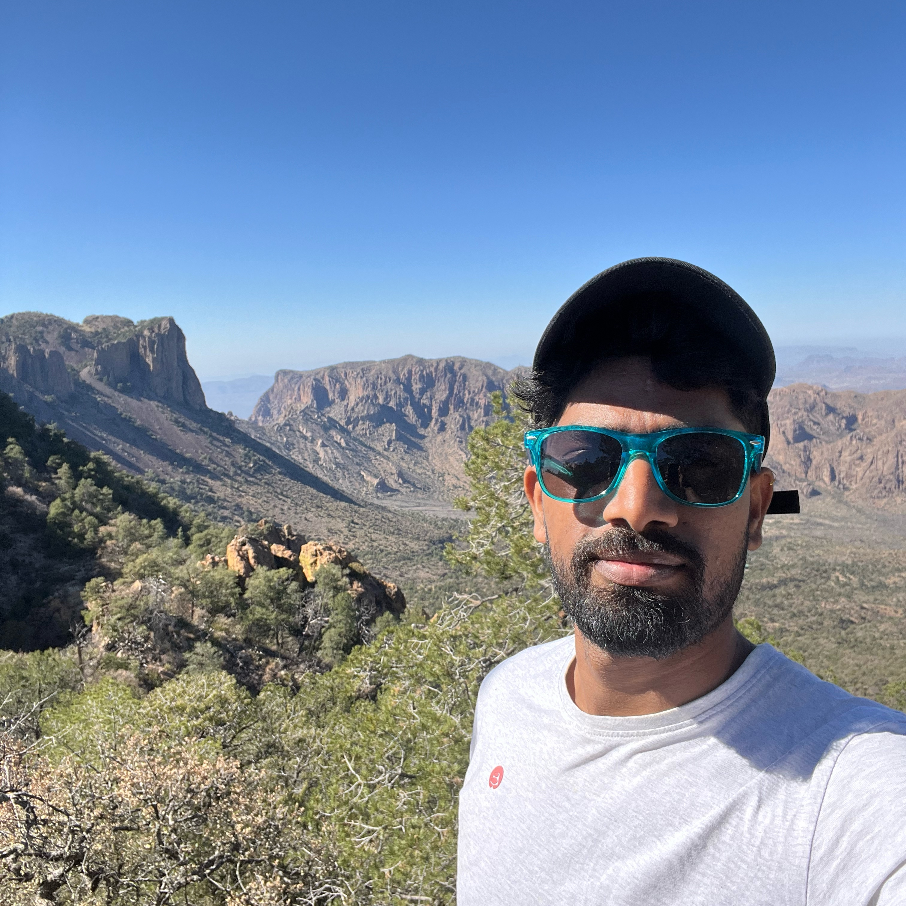

- Program
- Ph.D.
- Affiliation
- Department of Biological Sciences, Texas Tech University
- Advisor
- Dr. Joseph D. Manthey
Texas Tech University
About me
I'm a Ph.D. student in the Department of Biological Sciences at Texas Tech University, working in the Manthey Lab. My research focuses on the evolutionary processes that generate and maintain biodiversity, including how populations diverge, how gene flow and hybridization shape genomes, and how past climatic changes have influenced species’ evolutionary histories.
I use whole-genome data to study speciation, gene flow, hybridization, and codiversification across diverse taxa. My current research focuses on carpenter ants and their bacterial endosymbionts, while my broader interests include understanding how genomic variation and evolutionary histories are shaped across different organisms and ecological systems.
I also enjoy teaching and have taught Introduction to Biology (BIOL 1403) at Texas Tech. Outside research, I am active in indoor and outdoor sports.